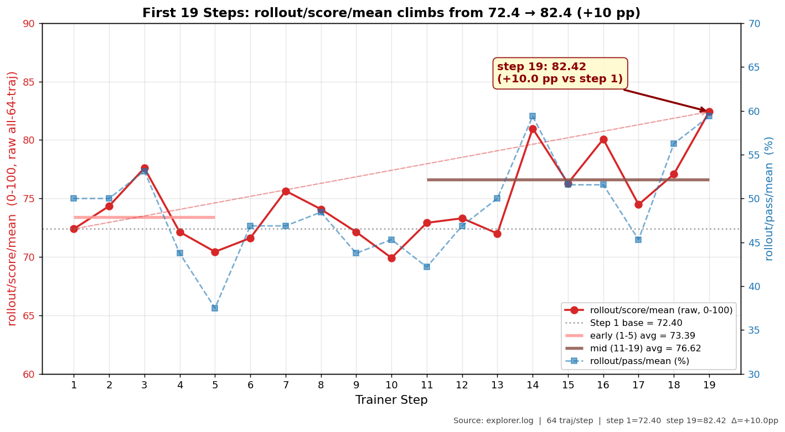

本章模式：黑盒。我们不解释任何原理，只让你跑通命令、看到曲线。所有"为什么"都留到第 2–5 章。
1.0 这一章你会做什么
3 件事，按顺序：
- 拿到 Tinker API key（5 分钟）
- clone Trinity-RFT，准备 yaml + 启动脚本（5 分钟）
bash一下，等一晚上，看曲线（19 step ≈ 9 小时）
跑完之后你会看到：
rollout/score/mean从 72.4 涨到 82.4（+10 pp）rollout/pass/mean从 50.0% 涨到 59.4%（+9.4 pp）- 8 个真实编程任务里，最难的 simple_085（asyncio TCP）从 0/8 满分提到 4/8
重要约定：本章你只看曲线就行，不需要看懂任何超参 / 指标公式 / 算法术语。看不懂是正常的，第 2–5 章会一层一层拆开。
1.1 为什么这是真正的 Agentic-RL 任务
在你 bash 之前，先花 30 秒理解你即将训练的是什么任务。
我们用的数据集 queries_simple v20_top8 包含 8 个真实的小型工程任务，每个任务模型必须：
- 在 E2B sandbox 里多轮调用
execute_shell_command/read_file/write_file/edit_file/grep_search等工具 - 真正在容器里创建、修改、验证文件与服务
- 判分依赖 容器内的真实运行结果（文件内容、server 是否能被 curl 访问、sqlite 表是否含对应行等）
这与社区里大部分"Agentic RL"教程不同——后者多是 GSM8K + Calculator / MATH + Python REPL 这类 单步、verifier 判分 设置，本质只是 RLVR，不算真 agentic。详细辨析见教程 § 数据集章节。
8 个任务一览（base_score 是 base policy 的初始能力）：
| task_id | 任务简介 | base_score | 任务类型 |
|---|---|---|---|
| simple_098 | 用 sqlite3 实现 KV 存储并写出文件 | 0.458 | DB 操作 |
| simple_038 | 字母频次直方图 | 0.406 | 字符串处理 |
| simple_085 | asyncio TCP echo server | 0.611 | 异步网络 |
| simple_070 | 凯撒密码加解密 | 0.667 | 字符串加密 |
| simple_019 | CSV 双条件过滤 | 0.750 | 数据处理 |
| simple_094 | stdlib HTTP 多 path 路由 | 0.778 | Web 服务 |
| simple_059 | 增量备份按 sha256 | 0.833 | 文件系统 |
| simple_075 | 多关键字一次替换 | 0.833 | 字符串处理 |
1.2 准备：5 分钟拿到 API key + clone 仓库
步骤 1：拿到 API key
本教程只需要 1 个必需密钥：
| Key | 去哪拿 | 用途 |
|---|---|---|
E2B_API_KEY |
e2b.dev 注册 | 远程 sandbox（agent 在里面跑 shell） |
以下 3 个 key 在本教程的
queries_simple路径中实际不会被使用（仅旧版run.py路径需要），.env里可留空：
Key 原用途 为什么不需要 DASHSCOPE_API_KEYsandbox 内 agent 调用的 LLM agent 实际调用的是 RL 训练模型（TuFT/Tinker），不是 DashScope OSS_ACCESS_KEY_ID拉取压缩任务素材到 sandbox run_simple.py通过 stdin 注入数据，不依赖 OSSOSS_ACCESS_KEY_SECRET同上 同上 有 GPU 的同学：不需要 Tinker，跳到第 6 章看 TuFT 自部署版本。 没 GPU 的同学：还需要 Tinker 的
TINKER_API_KEY+TINKER_BASE_URL（零本地 GPU 路径）。E2B 有免费额度（Hobby 层 $100 一次性 credit），本教程 19 step 训练的 sandbox 用量约 $10–20，在免费额度内。
步骤 2：clone 仓库
git clone https://github.com/nashjojo/Trinity-RFT.git -b public/copaw_rl
cd Trinity-RFT
cp .env.example .env
# 编辑 .env，填入 E2B_API_KEY（以及 Tinker 的 key 如果用云服务）
依赖安装由
run.sh自动完成（通过uv sync从 GitHub fork 固定 commit 拉取 trinity-rft），无需手动pip install。
1.3 启动：bash 一下
确保 .env 已填好密钥后，直接运行：
# 启动训练（run.sh 会自动 uv sync 装依赖、设置环境变量、调用 run_train.sh）
bash run.sh
# 先做 2 步冒烟验证（~1 小时）确认环境没问题再跑完整 19 步：
TOTAL_STEPS=2 bash run.sh
run.sh会自动完成以下事情： -uv sync安装依赖（包括从 GitHub fork 固定 commit 拉取 trinity-rft） - 设置教程固定参数（lr=1e-6, total_steps=19, seed=42 等） - 启动 DAPO soft length penalty - 隔离 Ray 集群 - 调用examples/copaw_rl/queries_simple/run_train.sh开始训练不需要手动
pip install或trinity run，run.sh一条命令搞定。
跑起来后会刷一堆日志。下面是我们真实跑这个实验时的终端输出节选（时间戳、指标都是实测值，你的会略有不同），给你一个参考——看到类似的输出就说明一切正常：
INFO 06-09 03:00:37 [trainer.py:76] Trainer is ready.
INFO 06-09 03:01:37 [trainer.py:208] Trainer sync_weights at step 0 started.
INFO 06-09 03:01:37 [trainer.py:227] Trainer sync_weights at step 0 finished.
INFO 06-09 03:01:37 [trainer.py:90] Sample data for step 1 started. # ← explorer 开始在 sandbox 里跑 8×8=64 条 rollout
INFO 06-09 03:19:25 [trainer.py:106] Sample data for step 1 finished. # ← ~18 min 后 rollout 采样完成
INFO 06-09 03:19:25 [trainer.py:168] Training at step 1 started.
INFO 06-09 03:29:58 [trainer.py:172] Training at step 1 finished. # ← ~10 min 后 trainer 更新完权重
INFO 06-09 03:29:58 [trainer.py:243] Saving checkpoint at step 1...
INFO 06-09 03:30:01 [monitor.py:158] Step 1: {'rollout/score/mean': 72.39, 'rollout/pass/mean': 0.5,
'critic/score/mean': 0.6849, 'actor/ppo_kl': 0.0113, 'actor/pg_clipfrac': 0.0140,
'response_length/mean': 12407.8, 'sample/task_count': 8, ...} # ← 第一步有数了：score 72.39 / pass 50%
INFO 06-09 03:30:01 [trainer.py:90] Sample data for step 2 started.
INFO 06-09 03:47:42 [trainer.py:106] Sample data for step 2 finished.
INFO 06-09 03:58:48 [monitor.py:158] Step 2: {'rollout/score/mean': 74.35, 'rollout/pass/mean': 0.5,
'critic/score/mean': 0.6966, 'actor/ppo_kl': 0.0094, ...} # ← score 开始往上走
...
INFO 06-10 xx:xx:xx [monitor.py:158] Step 19: {'rollout/score/mean': 82.42, 'rollout/pass/mean': 0.594, ...} # ← 最后一步：+10pp
INFO 06-10 xx:xx:xx [trainer.py:141] No more samples to train. Stopping training.
INFO 06-10 xx:xx:xx [trainer.py:157] > Trainer finished.
几个关键行的含义（现在看不懂没关系，第 2 章会拆开）：
Sample data for step N started/finished：explorer 在 E2B sandbox 里跑 rollout，单步 ~18 minTraining at step N started/finished：trainer 用这批经验更新 LoRA 权重，单步 ~10 minStep N: {'rollout/score/mean': ...}（你要盯的就是这一行）：这一步 8 个任务的平均得分——从 step 1 的 72.39 一路涨到 step 19 的 82.42
📄 想看完整的过程？我们把这次真实训练的1→19 step 终端输出（已脱敏，不含任何 API key / IP）整理成了一份参考日志：ch1_train_log_sample.txt。里面有每一步的 score / pass 进度速览表，可以跟你自己跑出来的输出逐行对照。
1.4 等一晚上：~9 小时
19 step 训练总共需要约 9 小时（每个 step ~28 min：rollout 17 min + trainer 10 min + sync 1 min）。
怎么知道还有多久：终端会持续打印 Step N 的日志，N 从 1 数到 19。你可以睡觉，明早起来看曲线。
中途要监控什么：什么都不用。第一次跑就当背景跑，遇到任何报错截图存起来，第 2 章会教你看日志。
1.5 起床：看曲线
训练跑完，用 TensorBoard 看曲线：
# TensorBoard 会自动读取 checkpoint 目录下的 monitor 日志
tensorboard --logdir checkpoints/CoPaw-Pro-RL --port 6006
# 浏览器打开 http://localhost:6006
在 TensorBoard 中找到 rollout/score/mean 这条曲线，你应该看到：

3 件事一眼可见：
- 红线（
rollout/score/mean）从 step 1 的 72.40 一路抬到 step 19 的 82.42——+10.0 pp ⭐ - 蓝虚线（
rollout/pass/mean，右轴 %）同步上升，50.0% → 59.4%（+9.4 pp） - 中间 step 5 / step 10 有低点是采样噪音，但整体趋势单调向上（粉色 / 棕色短横线分别是 early avg = 73.39 / mid avg = 76.62）
两个独立指标交叉验证 → 不是采样噪音打出的偶发高分，是真实学习信号。
1.6 看一个具体例子：simple_085 学到了什么
simple_085 是难度最大的任务之一：让 agent 在 sandbox 里用 asyncio 实现 TCP echo server 并通过 curl 验证。
教程后续章节（ch2–ch5）会一直用 simple_085 这同一个任务作为主线例子。它改进最明显（+33 pp），且行为变化最有可解释性。
Step 1（base policy）8 次采样的 score 分布：
score=1.00 ×2, score=0.67 ×4, score=0.33 ×2
→ 2/8 满分。看 session 日志里典型失败模式：async 代码写法有 bug（SyntaxError / AttributeError），看到 stderr 也不会调整，最后放弃。
Step 19（学习后）8 次采样的 score 分布：
score=1.00 ×4, score=0.67 ×4, score=0.33 ×0
→ 4/8 满分 + 4/8 过了 2/3 check，score=0.33 的“完全失败”样本从 2 条降到 0 条。
具体行为变化（运行 python scripts/tutorial/ch2_inspect_trajectory.py --sample --compare 可以看到完整对比）：
| 行为 | base policy | step 19 |
|---|---|---|
| async 写法 | SyntaxError / AttributeError，代码跑不起来 | 正确的 async def + asyncio.run() |
| 连接前检查 | 不检查服务状态，直接放弃 | ps -ef \| grep LISTEN 确认端口就绪 |
| 错误处理 | 忽略 stderr，放弃不试 | kill 冲突进程，重试直到成功 |
→ 模型在 19 step 内真的“学会”了“启动异步服务”这件事的正确做法。
1.7 这一章你应该带走的
✅ 跑通了一次完整的 Agentic-RL 训练：模型 + 数据 + 后端 + sandbox 全链路打通。
✅ 看到了真实的学习信号：score +10pp / pass +9.4pp，两个独立指标交叉验证。
✅ 看到了一个具体能力的诞生：从 asyncio.run() 报错 → 用 new_event_loop 正确启动服务。
❌ 你还不需要懂： - 单次 rollout 内部到底是 prompt → tool call → tool result → next decision 哪些环节（→ 第 2 章） - score 0.67 / 0.33 这些数字是怎么来的（→ 第 3 章） - 为什么训练能让模型变好（→ 第 4 章 GRPO / 第 5 章权重更新）
留个问题给自己：现在你看到了"score 涨了 10pp"这个结果，但你说不清这 10pp 具体来自哪里——是更长的思考？更准的工具调用？更好的错误恢复？第 2 章就来打开这个黑盒。